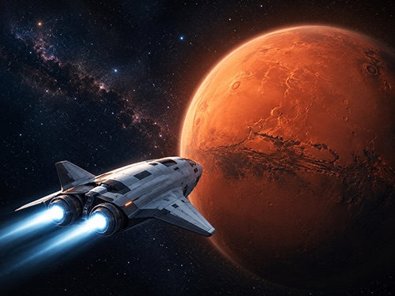
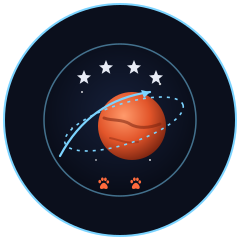
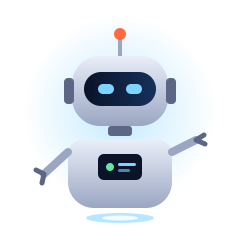
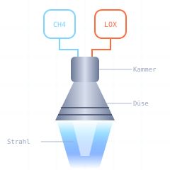

01 · Mission
Sieben Monate bis zum roten Planeten
Das Projekt „Mission Mars“ beschreibt einen zukunftsweisenden Flug zum roten Planeten. Ziel ist es, mit einer 4-Mann-Besatzung und zwei Hunden sicher zum Mars zu reisen, wissenschaftliche Daten zu sammeln und neue Technologien unter realen Bedingungen zu testen.

Die Raumfähre ARES-1 startete im Startfenster vom Frühjahr 2031, das alle 26 Monate eine besonders günstige Bahn zwischen Erde und Mars öffnet. Rund 210 Tage dauert der Transfer. In dieser Zeit legt das Schiff mehr als 480 Millionen Kilometer auf einer gekrümmten Ellipse um die Sonne zurück.
Unterstützt wird die Crew durch neuartige KI-Robotics-Systeme. Intelligente Roboter helfen bei Steuerung, Wartung und Datenanalyse, überwachen technische Abläufe und erkennen mögliche Störungen frühzeitig. Dadurch wird die Sicherheit an Bord erhöht und die Besatzung kann sich stärker auf Forschung und Mission konzentrieren.
Nach der Ankunft schwenkt ARES-1 in eine Umlaufbahn ein. Ein Landemodul bringt die Crew in die Region Arcadia Planitia, in der Radarmessungen Wassereis knapp unter der Oberfläche vermuten lassen. Dort beginnt ein 30-tägiger Forschungsaufenthalt.
- StartTag 0 · Erdorbit verlassen
- TransferTag 1–209 · Reise und Forschung an Bord
- AnkunftTag 210 · Einschwenken in die Marsumlaufbahn
- LandungTag 214 · Arcadia Planitia
- RückflugTag 244 · Start zurück zur Erde
02 · Crew
Vier Menschen, zwei Hunde, ein Ziel

Auch das Leben an Bord spielt eine wichtige Rolle. Die beiden Hunde begleiten die Mission, um das Zusammenleben von Mensch und Tier auf langen Weltraumreisen zu untersuchen. Die vier Crewmitglieder wurden aus über 2.000 Bewerbungen ausgewählt und haben drei Jahre gemeinsam trainiert, unter anderem in einer Polarstation und in einer Unterwasser-Habitat-Simulation.
-
Dr. Lena Hartmann
Kommandantin
Leitet die Mission und trifft die Entscheidungen bei Abweichungen vom Flugplan.
-
Jonas Okafor
Pilot
Verantwortlich für Kurskorrekturen, Andockmanöver und die Landung.
-
Mei Tanaka
Systemingenieurin
Betreut Antrieb, Energieversorgung und die Zusammenarbeit mit den Robotern.
-
Dr. Rafael Costa
Bordarzt und Biologe
Überwacht die Gesundheit von Mensch und Tier und leitet die Experimente.
-
Luna
Border Collie
Ruhig und aufmerksam. Ihr Schlafrhythmus liefert Daten zur Anpassung an fehlendes Tageslicht.
-
Kepler
Australian Shepherd
Der Bewegungsfreudige an Bord. Testet das Laufband für Vierbeiner in Schwerelosigkeit.
03 · KI-Robotics
KIRA denkt mit, die Crew entscheidet

Herzstück der Bordtechnik ist KIRA, die Kognitive Intelligente Robotik-Assistenz. Sie verarbeitet jede Sekunde rund 40.000 Messwerte aus allen Systemen des Schiffs und meldet Auffälligkeiten, bevor sie zum Problem werden. Wichtige Entscheidungen bleiben trotzdem bei der Crew: KIRA schlägt vor, der Mensch bestätigt.
-
Steuerung
Berechnet Kurskorrekturen und spielt sie dem Piloten als Vorschlag mit erwarteter Treibstoffmenge zu.
-
Wartung
Drei Wartungsdrohnen prüfen Leitungen und Außenhaut und tauschen Filter selbstständig aus.
-
Datenanalyse
Wertet Experimente aus und erstellt jeden Abend einen Bericht für das Kontrollzentrum auf der Erde.
-
Frühwarnung
Erkennt Muster wie steigende Temperaturen an Pumpen und warnt Tage vor einem möglichen Ausfall.
04 · Antrieb
Treibstoff, der auf dem Mars nachgetankt wird

Ein weiterer Schwerpunkt ist die Entwicklung einer neuen Technologie für Raketentreibstoff. Dieser soll leistungsstärker, effizienter und ressourcenschonender sein als bisherige Systeme. So könnten zukünftige Raumflüge schneller, sicherer und wirtschaftlicher werden.
Das Triebwerk Ares H2X verbrennt Methan mit flüssigem Sauerstoff. Beides lässt sich auf dem Mars aus dem Kohlendioxid der Atmosphäre und aus Wassereis herstellen. Eine Anlage im Landemodul produziert während des Aufenthalts den Treibstoff für den Rückflug. Das Schiff muss ihn also nicht von der Erde mitbringen und startet deutlich leichter.
- Schub
- 2.300 kN
- Treibstoff
- Methan + LOX
- Gewichtsersparnis
- ca. 30 %
- Nachtanken
- vor Ort auf dem Mars
„Mission Mars“ verbindet Forschung, Innovation und Abenteuer zu einem spannenden Zukunftsprojekt der Raumfahrt.
Michael Schönebeck · Einsendeaufgabe MMDE30 Responsive Webdesign · Neugestaltung Oktober 2026